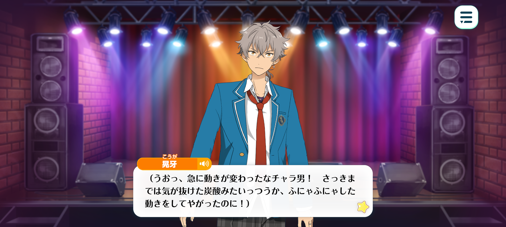
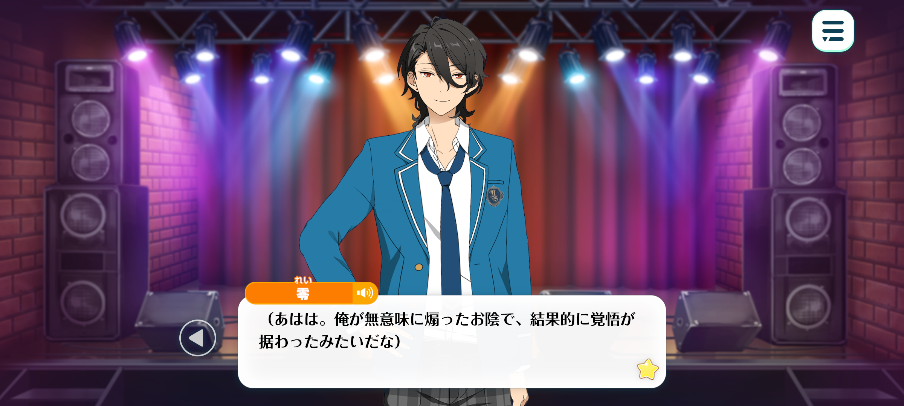
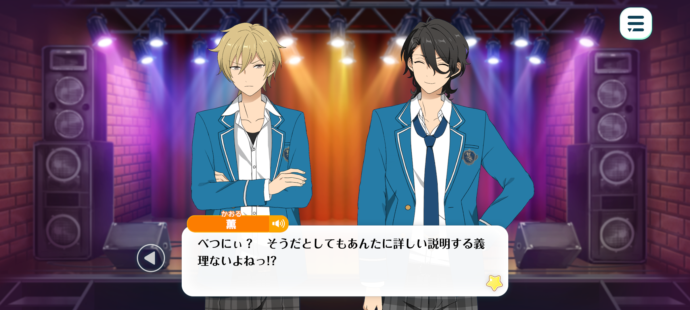

PSYCHOBREAK — Chapter 13



Koga: (Whoa! That playboy's suddenly changed the way he's movin’! Before, he was just flailing his limbs around like an octopus!!)
(Now he's putting real feeling into his movements. He wasn't doing that at all during rehearsals! He's got emotion! He's got a soul! That's it! That's how you're supposed to do it!)
(I'm still tryna figure that out myself, though...! I don't wanna start making excuses afterwards, saying I wasn't prepared enough or that I just didn't have the talent!)
(I've gotta give it everything I've got!)
"♪～♪～♪"
Adonis: (Hakaze-senpai, Oogami... You're both amazing. It's as though a damp firework has suddenly burst into flame.)
(Why the sudden change? Is it because of Sakuma-senpai? Did seeing him reassure them and help them let go of all that unnecessary tension?)
(I don't understand why, but... I have to– I have to do my best, too.)
(I need to follow their example — these people, my comrades.)
(For their sake. For the sake of these people who accepted me, an outsider, through nothing more than a chance turn of events!)
"♪～♪～♪"

Rei: (Ahaha. Looks like my little provocation actually helped them get their heads in the game.)
(All those complicated thoughts have gone flyin’ out the window. Now all they can think about is how pissed off they are with me.)
(As long as they're not getting distracted by pointless stuff, they can focus entirely on moving their bodies.)
(And even if your bodies haven't quite reached your full potential yet, you've got an incredible amount of talent just waitin’ to come out.)
(So let it loose. Let it bloom into something spectacular.)
(That's why you guys can beat anyone, even without me there.)
(Well, those "vampires", at least. They're nothing but a bunch of talentless delinquents who've spent all their time skipping school and messin’ around.)
(The DreFes was supposed to be a live showdown, but this time it's more like a ceremony.)
(UNDEAD will beat the “vampires” who are nothing more than an untalented, unorganised mob.)
(The script's already been written. The outcome was decided before the battle even began.)
(Bouzu's the one who wrote this story. By taking credit for driving out the delinquents through the outcome of this performance, he'll, no, the Student Council will, gain even more power and influence.)
(This is just another steppin’ stone towards that goal. Haha. In the end, I was nothing but a pawn to him.)
(Still, I was a little nervous at first, but at this rate, there's no way we'll lose unless something seriously unexpected happens. The outcome's practically set in stone.)
(We'll win. As UNDEAD.)
(To begin with, even if we challenge those "vampires" to a live showdown, not a single one of them will show up. This whole contest, "Flashback", is going to end with UNDEAD winnin’ by default.)
(Especially when the person they'd have to fight is yours truly, the very person they worship. They'd hardly be keen to raise a hand against their own god, would they?)
(Those "vampires" aren't gonna fight us. They won't take part. They won't even set foot on this stage.)
(Because those ‘vampires’ have no sense of urgency.)
(They don't think about the future. They haven't got a clue what'll happen if they don't show up here.)
(If you gave a damn about your future, you wouldn't be wastin’ your precious life slacking off and playing delinquent.)
(They're probably not even worried. Just going about their day like nothing's happenin’. Maybe they're even laughing at us for challenging them in the first place.)
(They think everything's a joke. All they do is piss their days away, laughing to themselves and wasting their lives.)
(But they won't be laughing for much longer.)
(My condolences. It's too late for you to regret it now, you morons.)
(The crossroad is here.)
(And those guys took a wrong turn.)
(Sorry, but I just can't feel sorry for them... Unlike Bouzu, they didn't even try to fight back. They claimed to admire me, but all they ever did was avoid me.)
(They say they love me, but all they really love is themselves.)
(That's why they took the easy way out. They chose the path of least resistance.)
(You acted like you couldn't see me, even when I was standing right in front of you. You turned away from the path and ran off, until you were completely out of my sight.)
(That road doesn't lead anywhere. It's crumblin’ beneath your feet, and you're heading straight for hell.)
(But... I've got nothing left to give right now. I can't even reach out to people like you, people who have nothin’ to do with me.)
(I’m sorry, but I can’t save you.)
...Welp! I've found what I was looking for. I'll be up there in two shakes of a lamb's tail~♪

Kaoru: Seriously? If you're not interested in doing this, you can just go home, you know?!
Rei: Ahaha. You’re sexy when you're angry, Hakaze-kun. Sorry, sorry, did I hit a nerve again?
Kaoru: No!? And even if you had, it's not like I'd tell you!
Rei: Yeah, yeah. Anyway, we've got plenty of time to get to know each other. However it happened, we're comrades now, and we'll have plenty of chances to get closer from here on out.
Yup. Luckily, we've still got time.
Our youth is right here.
"♪～♪～♪"